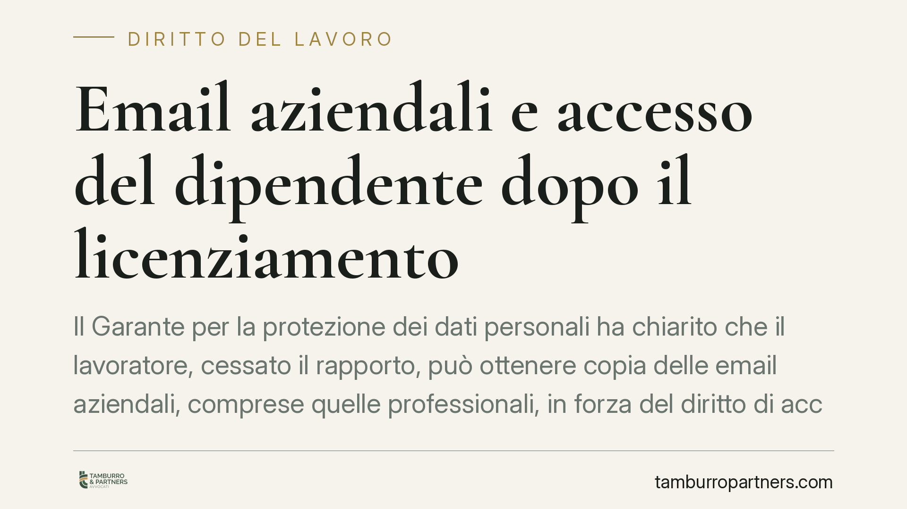

Email aziendali e accesso del dipendente dopo il licenziamento
Il Garante per la protezione dei dati personali ha chiarito che il lavoratore, cessato il rapporto, può ottenere copia delle email aziendali, comprese quelle professionali, in forza del diritto di accesso previsto dal GDPR. Una precisazione che impone alle imprese di rivedere policy e procedure di gestione delle caselle di posta, sotto pena di sanzioni.

Il caso e la posizione del Garante
Un ex dipendente chiede all'azienda copia delle email transitate sulla propria casella di posta durante il rapporto. L'impresa oppone un diniego, ritenendo che i messaggi a contenuto professionale appartengano all'organizzazione. Il Garante per la protezione dei dati personali ha dato torto al datore di lavoro: il diritto di accesso ai dati personali si estende anche alle comunicazioni professionali, purché riferibili all'interessato.
Il principio è chiaro. Un'email è un dato personale quando contiene informazioni riconducibili a una persona identificata o identificabile. Ciò accade sistematicamente nella corrispondenza di lavoro: mittente, destinatario, firma, contenuti che raccontano l'attività svolta. La natura "professionale" del messaggio non lo sottrae alla disciplina sulla protezione dei dati.
Inquadramento normativo
Il riferimento è l'articolo 15 del Regolamento UE n. 2016/679 (GDPR), che riconosce all'interessato il diritto di ottenere dal titolare del trattamento la conferma che sia in corso un trattamento di dati che lo riguardano e, in caso affermativo, l'accesso ai dati stessi. La norma prevede anche il diritto a ricevere copia dei dati oggetto di trattamento (art. 15, par. 3).
Il diritto non è però illimitato. Lo stesso articolo 15, al paragrafo 4, precisa che il diritto di ottenere copia non deve ledere i diritti e le libertà altrui. Qui sta il punto delicato: le email professionali coinvolgono spesso terzi (colleghi, clienti, fornitori), i cui dati vanno tutelati. Il titolare deve quindi bilanciare l'accesso richiesto con la riservatezza dei soggetti coinvolti, ricorrendo se necessario a oscuramenti (redazione) delle informazioni non pertinenti.
Restano ferme le eventuali esigenze di segretezza industriale o di tutela di posizioni giuridiche dell'azienda, che possono giustificare limitazioni motivate, ma non un rifiuto generalizzato.
Implicazioni pratiche per le imprese
La prima conseguenza riguarda la gestione delle caselle di posta alla cessazione del rapporto. Molte aziende disattivano o cancellano l'account nel giorno stesso dell'uscita del dipendente. Una prassi che, di fronte a una richiesta di accesso, può tradursi in una distruzione di dati e in una violazione contestabile dal Garante.
La seconda conseguenza tocca i tempi. Il titolare deve rispondere alla richiesta di accesso senza ingiustificato ritardo e comunque entro un mese dal ricevimento (art. 12 GDPR), prorogabile di due mesi in casi complessi. Non esiste margine per attese indefinite.
La terza conseguenza è organizzativa: serve una procedura definita che consenta di individuare, estrarre e, dove necessario, oscurare le email, evitando che la risposta comprometta la riservatezza di terzi.
Va segnalato anche il profilo penale. La cancellazione o l'inaccessibilità dolosa di dati per impedire l'esercizio di un diritto, o l'accesso abusivo a caselle non più autorizzate, possono assumere rilievo ai sensi delle norme sui reati informatici. Un tema che rende ancora più prudente una gestione documentata delle chiusure di account.
Cosa fare in concreto
- Riesaminate la privacy policy aziendale e il regolamento sull'uso della posta elettronica, prevedendo espressamente cosa accade agli account alla cessazione del rapporto.
- Non cancellate immediatamente le caselle dei dipendenti in uscita: definite un periodo di conservazione ragionevole e un sistema di risposta automatica ai mittenti, come già suggerito dal Garante in passato.
- Predisponete una procedura di riscontro alle richieste di accesso, con tempistiche coerenti con l'articolo 12 GDPR e responsabilità interne chiare.
- Impostate criteri di oscuramento per proteggere i dati di terzi presenti nelle email prima della consegna delle copie.
- Documentate ogni passaggio (richiesta, valutazione, eventuali limitazioni, consegna), così da poter dimostrare la conformità in caso di reclamo.
Consigliamo alle imprese di affrontare il tema prima che una richiesta arrivi: intervenire a rapporto già cessato, con account disattivato, riduce i margini di manovra e aumenta il rischio sanzionatorio.
Disclaimer
Contributo informativo a cura di Tamburro & Partners - Avv. Giuseppe Tamburro. Non costituisce parere legale.
Ogni storia di lavoro ha i suoi tempi.
Se gestisci HR e vuoi un confronto su contenzioso, ispezioni o licenziamenti, scrivi allo studio. Ti rispondiamo entro un giorno lavorativo.